Monedas de 2 euros de Alemania
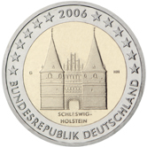
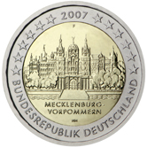 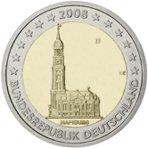 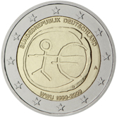
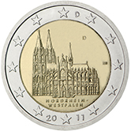 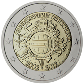 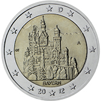
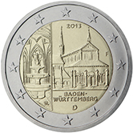
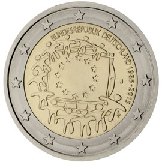 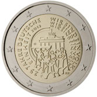 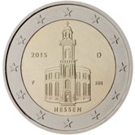 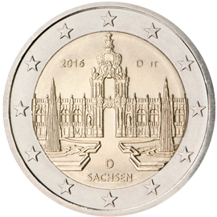
2006. Schleswig-Holstein.
❮
❯
 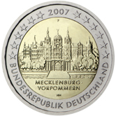
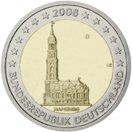
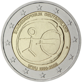
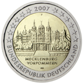
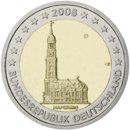
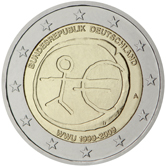

 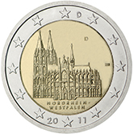
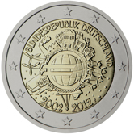
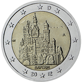
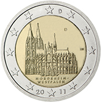
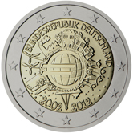
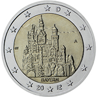
 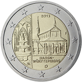
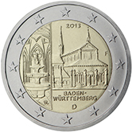
 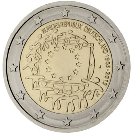
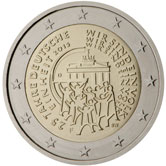
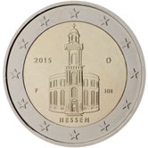
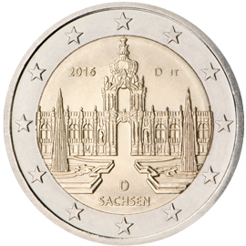
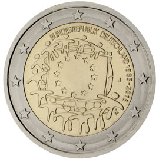
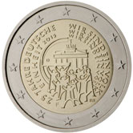
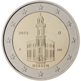
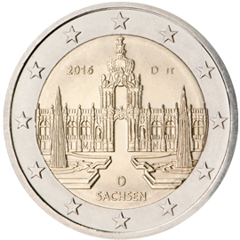
![2017. Renania-Palatinado (serie de los «Estados federados» [Bundesländer]).](../imagenes/Alemania/Alemania18.jpg) 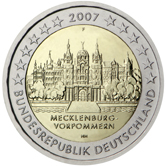
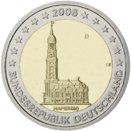
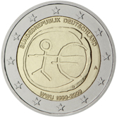
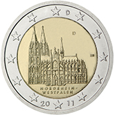
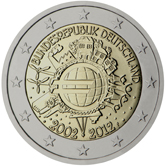
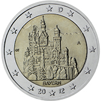
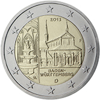
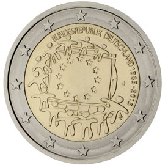
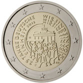
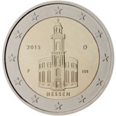
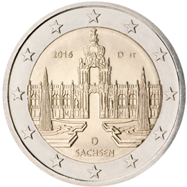
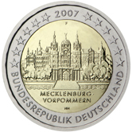
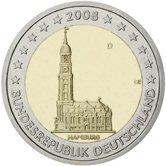
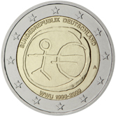
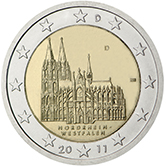
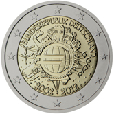
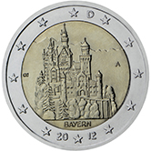
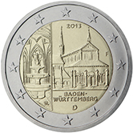
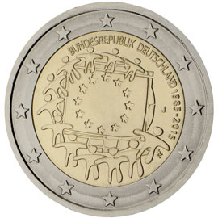
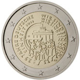
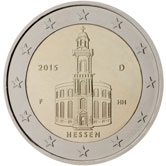
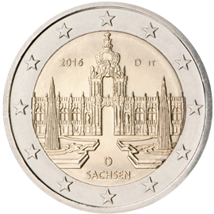